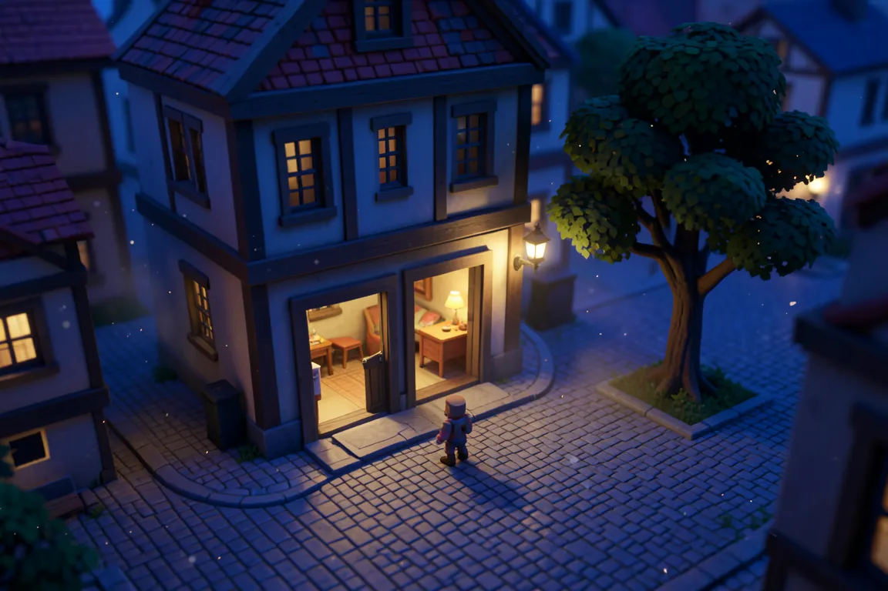

игры · 2018–now · также: HD-2D, Пиксельная диорама, Пиксельное 3D с тилт-шифтом
Пиксельные спрайты стоят в 3D-мире, собранном как миниатюрный макет, виден с высокой камеры с сильной глубиной резкости, свечением (bloom) и современным светом. Мир выглядит игрушечной диорамой в золотой час.

Главная идея
Старые пиксельные спрайты в современном свете и с глубиной резкости читаются как любовно собранная миниатюра.
Принципы дизайна
Оставляйте персонажей 2D-пиксельными спрайтами 32–64 px.
Стройте мир в 3D с пиксель-арт-текстурами на простой геометрии.
Берите высокую слегка наклонённую камеру и сильную глубину резкости: резкая середина, размытые верх и низ.
Освещайте современным динамическим светом: лампы, bloom и мягкие тени.
Добавляйте частицы: пыль, угли, лучи света.
Грейдите в тёплые золотые часы или глубокие синие ночи.